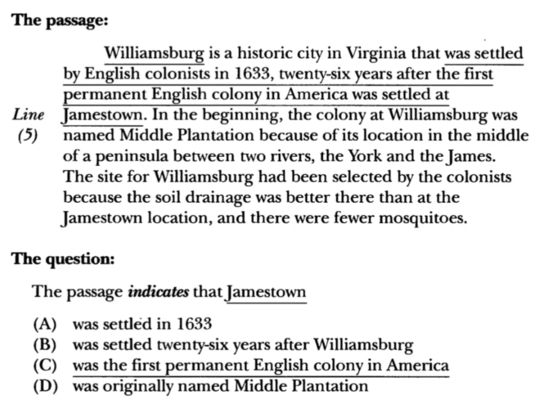
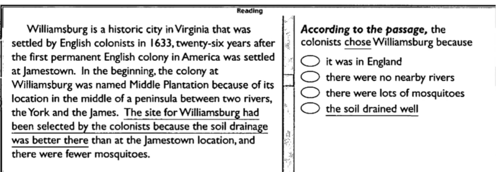
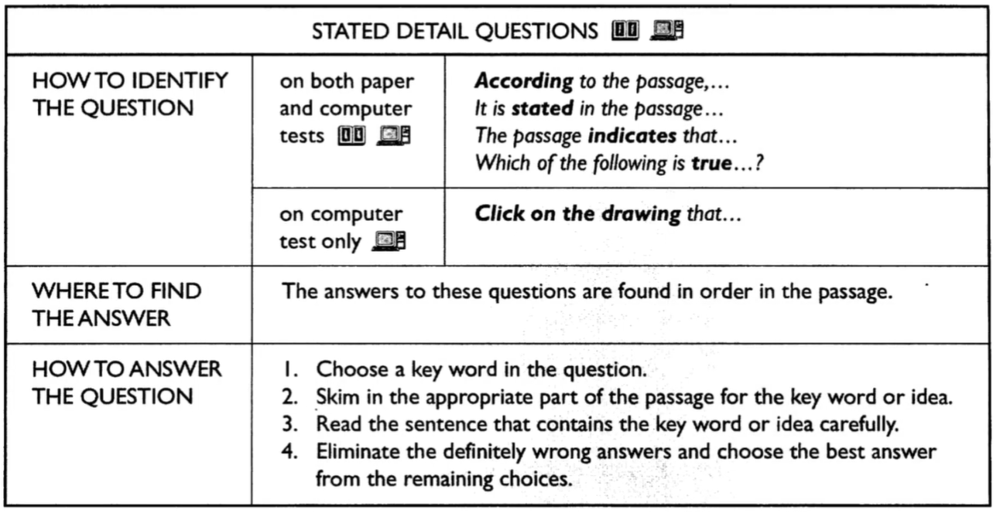
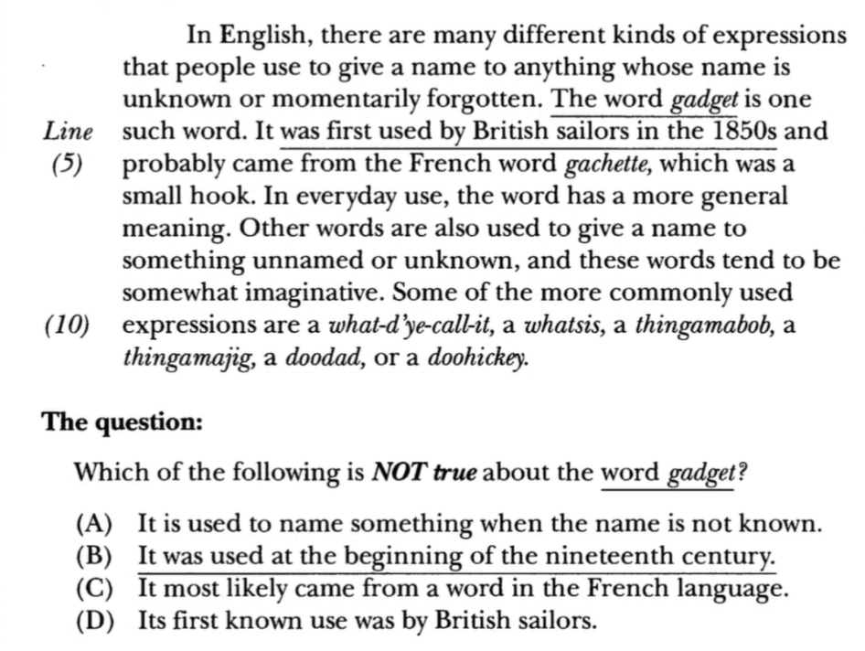
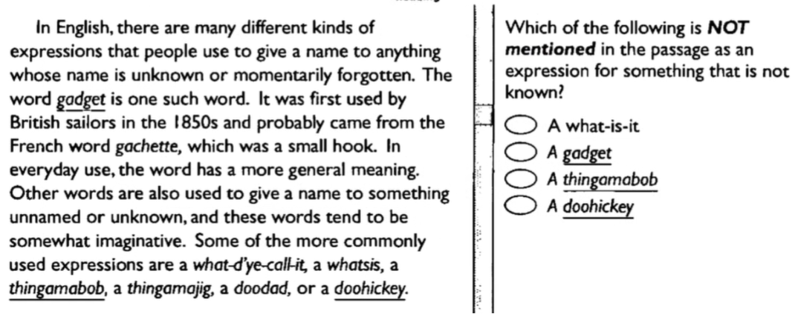
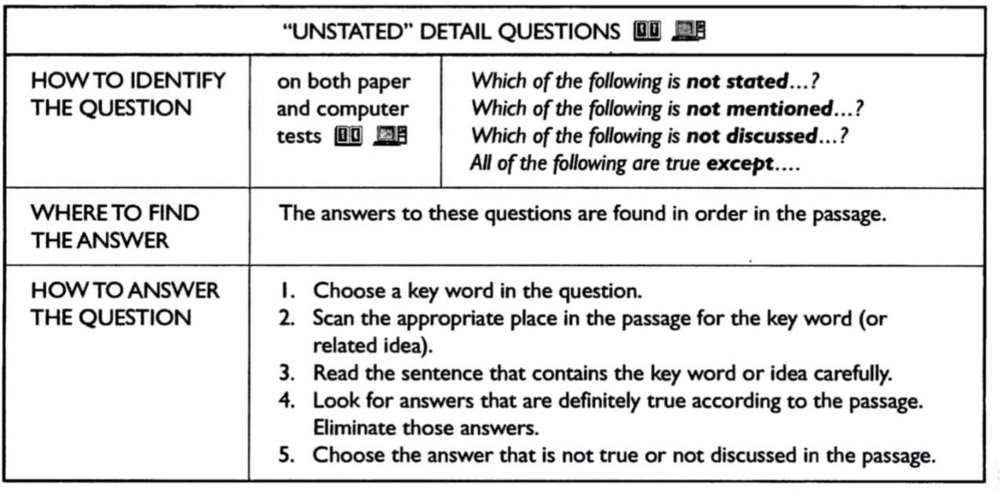
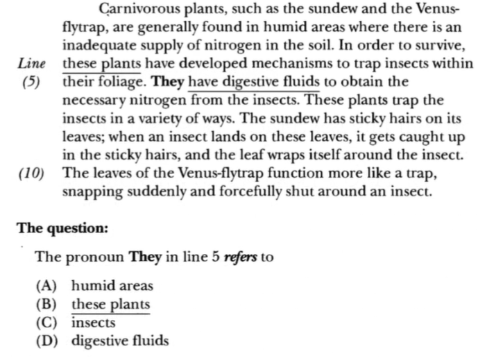
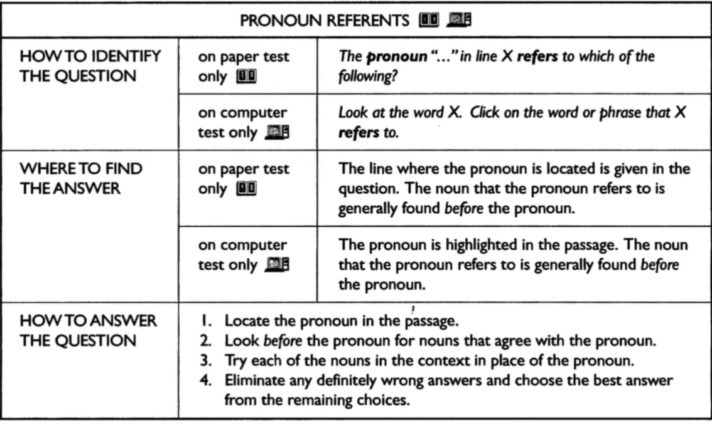

TOEFL Reading — Paket 2
Stated Detail, Unstated Detail & Pronoun Reference
Pelajari teori lalu uji dengan latihan interaktif (feedback langsung).
Answer Stated Detail Questions Correctly
A stated detail question maksudnya adalah pertanyaan-pertanyaan yang meminta pembaca untuk mencari informasi spesifik yang ada didalam teks. Jawaban dari pertanyaan ini tidak selalu persis sama dengan kalimat-kalimat didalam teks tetapi bisa saja merupakan ”restatement.” ”restatment” adalah formulasi kalimat berbeda tetapi idenya tetap sama. Contohnya :


Kesimpulan

📝 Latihan Interaktif — Skill 3
“Unstated” Detail Questions
Terkadang didalam test anda akan ditanya tentang pertanyaan yang jawabannya tidak tercantum, tidak disebutkan ataupun tidak benar. Apabila ada pertanyaan seperti ini berarti akan ada 3 jawaban benar dan 1 jawaban salah atau tidak dicantumkan atau disebutkan dalam teks.


Kesimpulan

📝 Latihan Interaktif — Skill 4
Pronoun Reference Questions
Didalam test anda akan ditanyakan tentang rujukan kata dari sebuah kata yang dimaksud didalam teks. Untuk menjawab pertanyaan tersebut maka anda dapat mencari katanya ‘sebelum’ rujukan kalimatnya.

Kesimpulan
